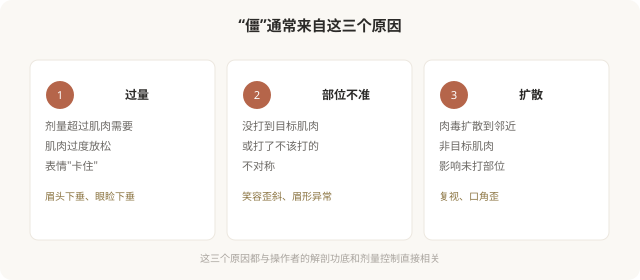

先说结论：肉毒后出现“面具脸”、笑容僵硬、不对称等不自然，常见根源是过量、注射部位不准或扩散到了非目标肌肉。“自然”不是简单地“少打一点”就能实现，它建立在精准的剂量控制、准确的解剖定位和个体化的美学判断上。一个打肉毒“自然”的医生，靠的是对每块表情肌的理解，而不是“打折剂量”。
为什么会“僵”

常见的“不自然”表现
- 额头僵硬、抬不起眉：额肌被过度放松，无法抬眉，表情呆板。
- 眉头下垂、眼睑下垂：额部或眼周注射过量或扩散，影响提眉肌和提上睑肌。
- 笑容不自然、嘴角歪：鱼尾纹或咬肌注射扩散到笑肌。
- “惊讶眉”（眉峰异常上扬）：额肌部分放松、部分未放松，形成不协调的眉形。
- 不对称：左右剂量或部位差异，造成表情不对称。
这些表现多数是暂时性的（随肉毒代谢消退），但发生时确实影响社交和心理。避免它们，靠的是操作者的经验。
“自然”的三个关键
第一，剂量克制。肉毒的“自然”往往来自不追求“完全消除纹路”。保留一定表情活力，比把皱纹打到完全消失更自然。一个好的医生会建议“留一点”，而不是“打到一点纹都没有”。
第二，部位精准。每一块表情肌都有它的注射点位，差几毫米可能从“有效”变成“影响非目标肌肉”。医生对表情肌群的理解，直接决定打完是否自然。
第三，个体化。每个人的表情习惯、肌肉力量、面部比例不同。照搬“标准点位”可能不适合所有人。好的医生会观察你的动态表情，调整方案。
“少打”不等于“自然”
有一个常见误区：认为“自然就是少打”。实际上：
- 过少可能无效，等于白打。
- 部位不对，再少也会影响非目标肌肉。
- 扩散与剂量、注射层次、术后按压都有关。
“自然”是精准的结果，不是偷工减料的结果。一个剂量克制、部位精准的注射，可能比一个“少打但乱打”的注射自然得多。
如何选择“打得自然”的医生
- 看医生的评估过程：是否让你做各种表情、观察动态、记录肌肉特点。
- 听医生的沟通：是否解释“留一点”的理由，而不是承诺“打到完全没有”。
- 看医生的态度：是否克制，是否愿意首次少量、复诊调整。
- 避免“流水线”：标准套餐、不看个体差异的，难以自然。
术后需要注意的
- 注射后短期避免：剧烈运动、按摩注射区、平躺、热敷（这些可能促进扩散）。
- 不要立即评估效果：肉毒需要数天到两周起效，刚打完的状态不代表最终效果。
- 记录效果：起效时间、自然程度、消退时间，便于下次调整。
- 出现明显不自然：多数会随代谢消退；如果影响严重（如眼睑下垂影响视力），及时联系医生，有些情况有对症处理方法。
一个判断框架
面诊肉毒，可以问医生：
- 您通常会保留多少表情活力？为什么？
- 我这个部位的主要风险是什么（如下垂、不对称）？
- 如果效果过强或不对称，能调整吗？
愿意讨论“留多少”“怎么避免僵”的医生，比承诺“打得最干净”的医生，更可能给你自然的结果。
本文用于健康教育，不能替代面诊和个体化评估；肉毒注射须在正规医疗机构由具备资质的医师开展。